Prolific
Prolific is a project management tool designed to help developers manage their projects efficiently. It provides a user-friendly interface and powerful features to streamline your workflow.
Table of Contents
Features
Project scanning
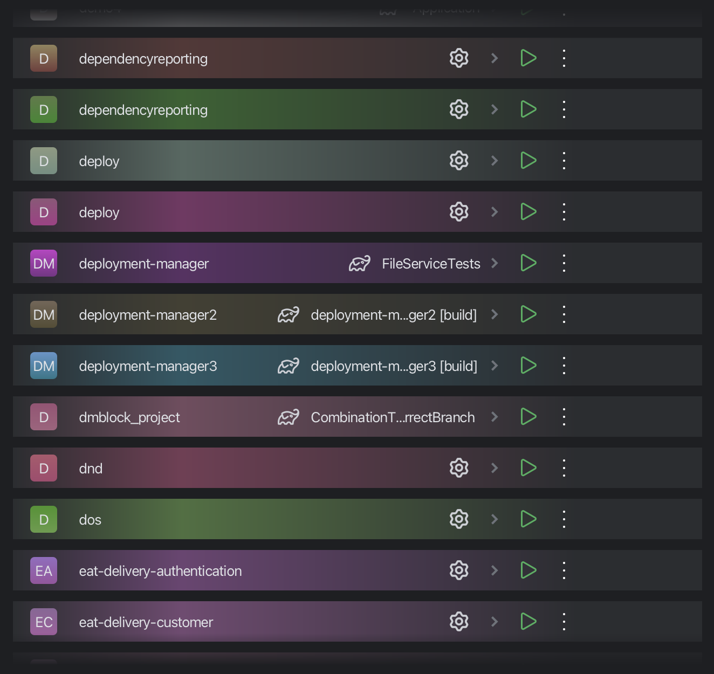Prolific automatically scans your projects and detects their types. It uses a set of predefined rules to identify different project types based on the files and directories present in your project. This allows you to quickly add and manage your projects without having to manually configure them.
Add a project manually
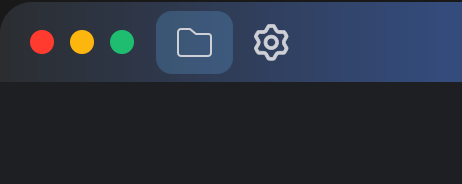You can add a project manually if it was not added automatically.
Filtering and searching
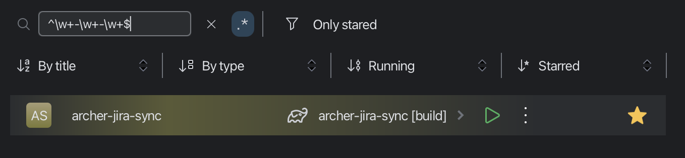Prolific provides powerful filtering and searching capabilities to help you find the projects you need quickly. You can filter projects by their title, type, if they are running or whether they are starred. You can also search using Regex. You can apply filters e.g. to show only starred projects or manually added projects.
Configuration importing
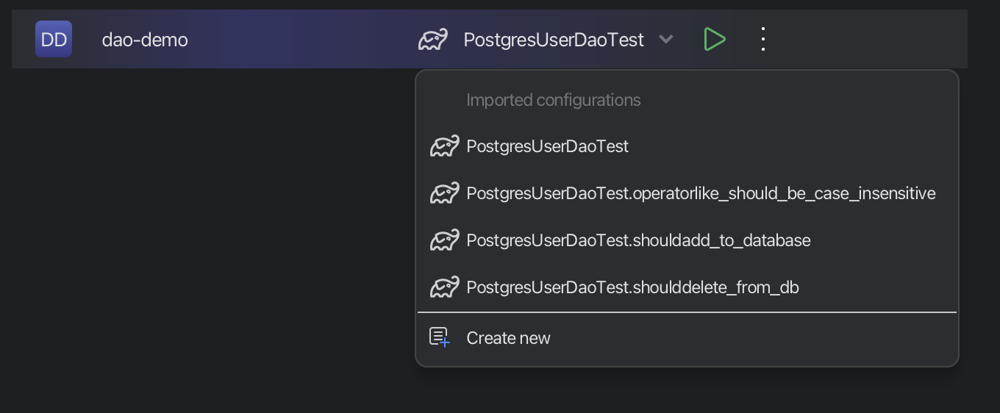Prolific can import existing run configuration from JetBrains IDEs. Currently supports Gradle tasks, Maven goals, Python and Flusk
Configuration creation
You can create your own run configurations.


This window allows you to declare how the app should run your project. You can choose from several options:
- Command: This is the most common option. You can specify any command that you want to run. You can use this option to run any script or program that you want.
- Gradle

This option allows you to run a Gradle task. You can specify the task name and any additional arguments that you want to pass to the task. You can use this option to run any Gradle task that your project's build.gradle file supports.
- Python

This option allows you to run a Python script. You can specify the script name and any additional arguments that you want to pass to the script. You can use both absolute and relative paths.
- Anaconda
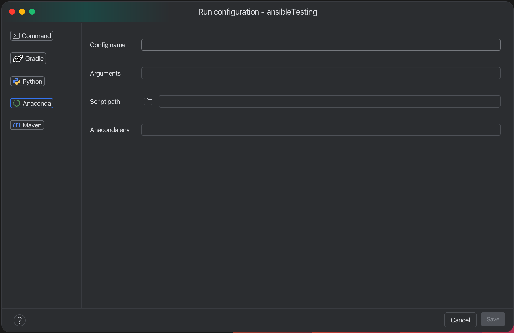
Config name, arguments and path to script are the same as in Python run config. The only difference is that you can specify conda environment name. This will activate the conda environment before running the script. To use this option you need to configure Anaconda path in settings!
- Maven
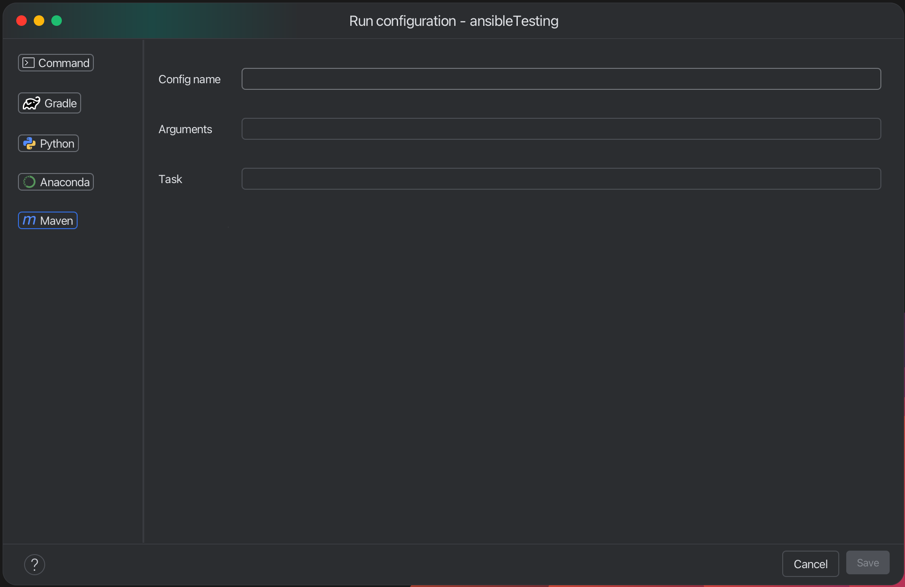
This option allows you to run a Maven task. You can specify the task name and any additional arguments that you want to pass to the task.
Run and monitor

You can run your project by clicking the play button. This will start the project and show the output in the console.
You can also stop the project by clicking the stop button.

You can monitor CPU and memory usage of your project. This will show you the current CPU and memory usage of your project in real time.
Terminated processes information
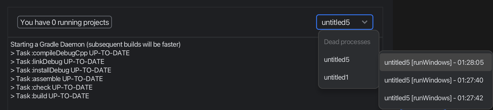You can also see logs and metrics of terminated processes. Currently, you will see only 3 last terminated processes for each project.
Notifications


Receive the most important notifications in real-time.
Manage your projects

You can star your projects to mark them as favorites. This will make it easier to find them later. You can also remove a project, delete it or open it in the file explorer.
Settings

The Settings screen is where you can configure a variety of options for the app. The settings are divided into several categories:
General
- Root path to scan: This is one of the most important settings. It defines the root path where the app will scan for files. The app will look for files in this directory and its subdirectories. You can set this to any directory on your system. You can use a button to select the directory.
- Excluded dirs: This setting allows you to specify directories that should be excluded from the scan. You can add
multiple directories, and they will be ignored during the scan process. You should use a semicolon (;) to separate
multiple directories. For example:
dir1;dir2;dir3. The app will not scan these directories or any of their subdirectories. This field also supports a glob pattern, so you can use wildcards to exclude multiple directories that match a certain pattern. For example:dir*;dir2*will exclude all directories that start withdirordir2. - Max scan depth: This setting allows you to specify the maximum depth of subdirectories to scan. For example, if you set this to 2, the app will scan the root directory and its immediate subdirectories, but not any subdirectories of those subdirectories. This can be useful if you have a large directory structure and want to limit the scan to a certain level.
- Rescan every hours: App automatically rescan the root path every X hours. This is useful if you want to keep the app up to date with the latest changes in your files. You can set this to any number of hours. Keep in mind that rescanning will be performed only if the app restarts. If you want to rescan the root path immediately, you can use the "Run scanning" button in the app.
- Language: We currently support English, Slovak and Russian. You can select the language from the dropdown menu. No restart is required
Environment
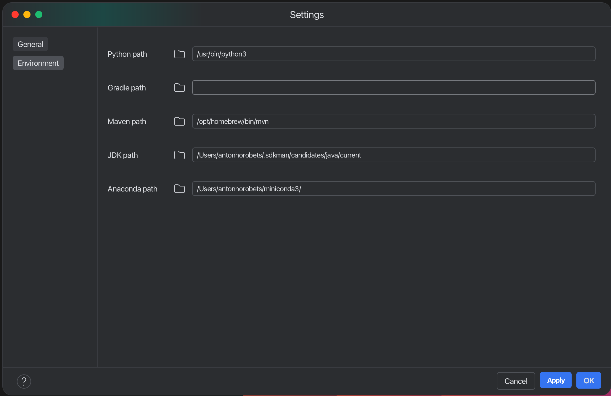This section allows you to configure the environment settings for the app. But for common use, you don't need to change anything here.
- Python path: Default value is python from PATH. If you want to use some python binary (different from one that is in PATH) you can configure this here. This is useful if you have multiple versions of Python installed on your system or if you want to use a specific version of Python for the app. You can set this to any valid path to a Python binary. You can use a
- Gradle: By default run configs will try to use project's Gradle wrapper (gradlew). If you want to use some other Gradle binary, you can configure this here.
- Maven path: By default run configs will try to use project's Maven (mvn). If you want to use some other Maven binary, you can configure this here.
- JDK path: By default run configs won't explicitly set JDK path. If you think, that you need to use some concrete
JDK
version, you can set it here. (For gradle tasks will be specified
-Dorg.gradle.java.home=<path>and for maven tasks)-Djava.home=<path>) - Anaconda path: You must provide this path in order to work with anaconda run configs This path is the path to
directory where all your conda environments are stored. Usually it is something like
/Users/user/miniconda3/(you mustn't specify/envs/part)
Profiles
Prolific supports multiple profiles. They are used to manipulate with permissions


Power user can:
- Exclude projects from scanning (will also delete a project from the list)
- Delete project from PC
Default user

Default user can't exclude dirs or delete projects.
This system was designed to prevent users from deleting projects or excluding dirs from scanning unintentionally.
No Metrics
This profile is used when you don't need metrics. This will all metrics collection and increase performance of the app.
Plugins

Prolific supports plugins. You can teach prolific how to determine a project type. You will need to add new .xml file. This file should have the next structure:
<projects>
<project>
<name>Your project type</name>
<identifiers>
<file>Some file name that will determine your project</file>
<folder>Some folder name/pattern that will determine your project</folder>
</identifiers>
</project>
</projects>You can use any combination of file and folder names. You can also use wildcards in the folder name. For example: dir* will match any
directory that starts with dir. You can also use * to match any directory. For example: * will match any directory.
Project related files
For unix systems Prolific creates .prolific directory in your user's home directory. This directory contains all
project related files as database, settings, plugins, run configs, and so on.
For windows systems Prolific creates Prolific directory in AppData folder.
Architecture
 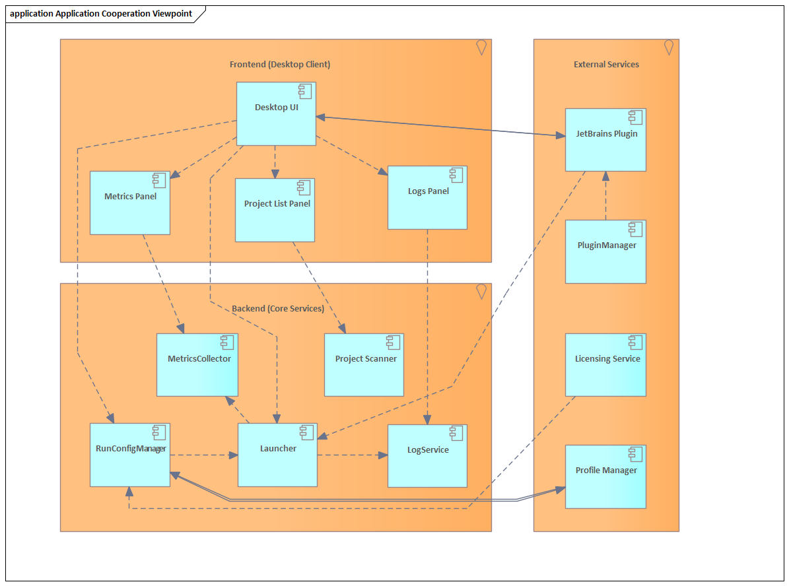
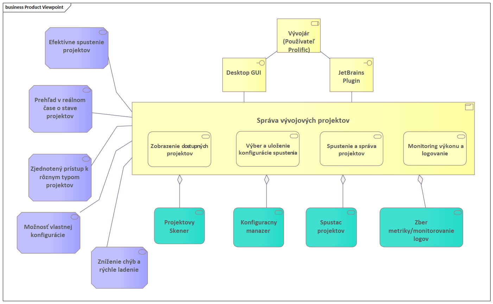
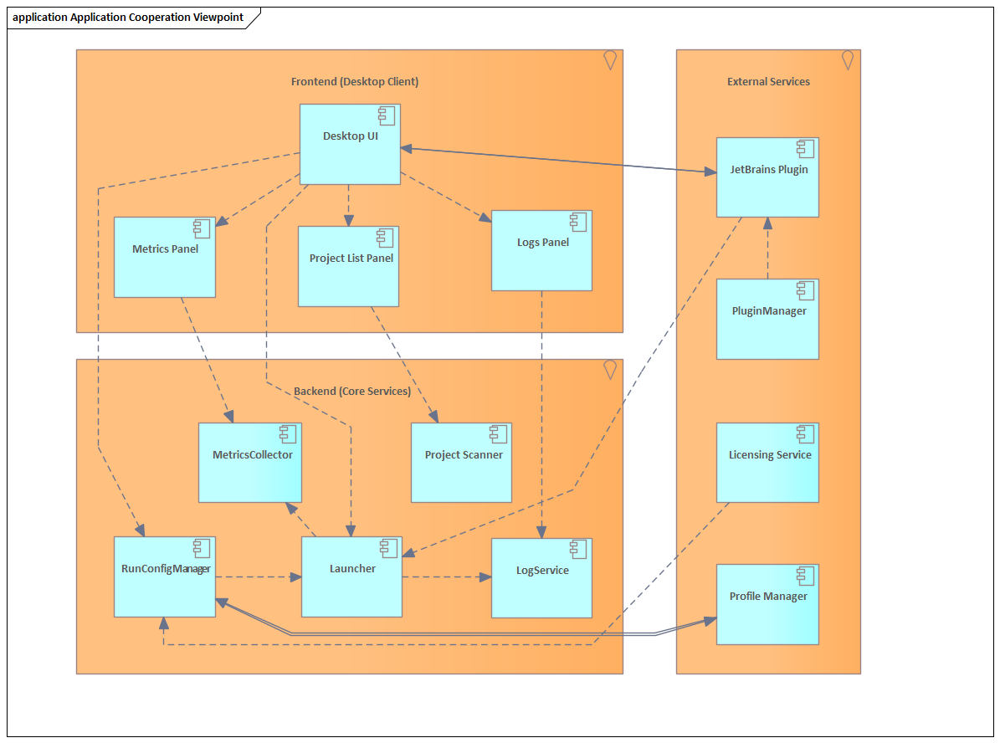
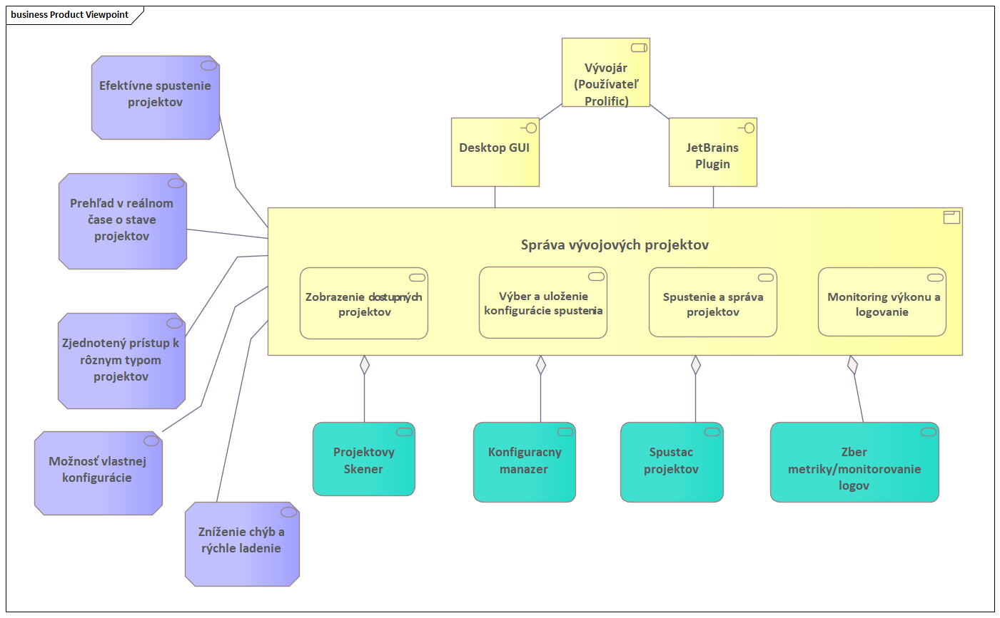
 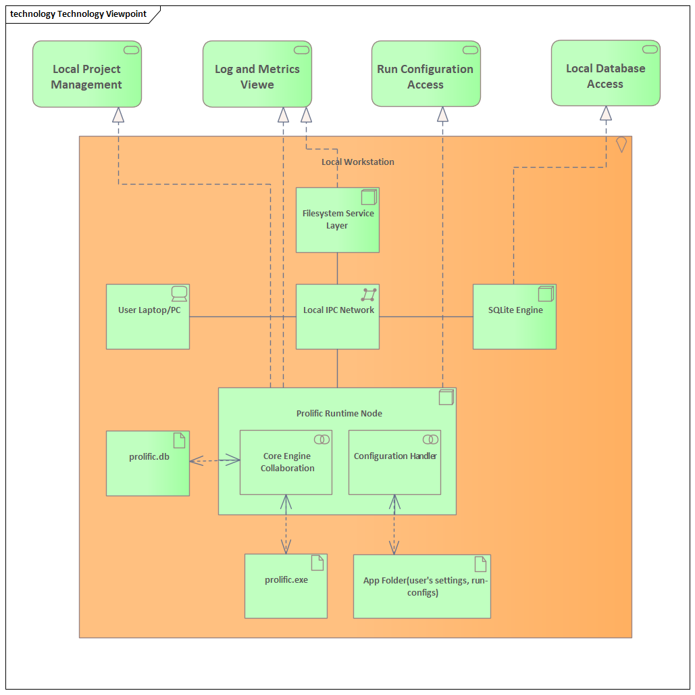
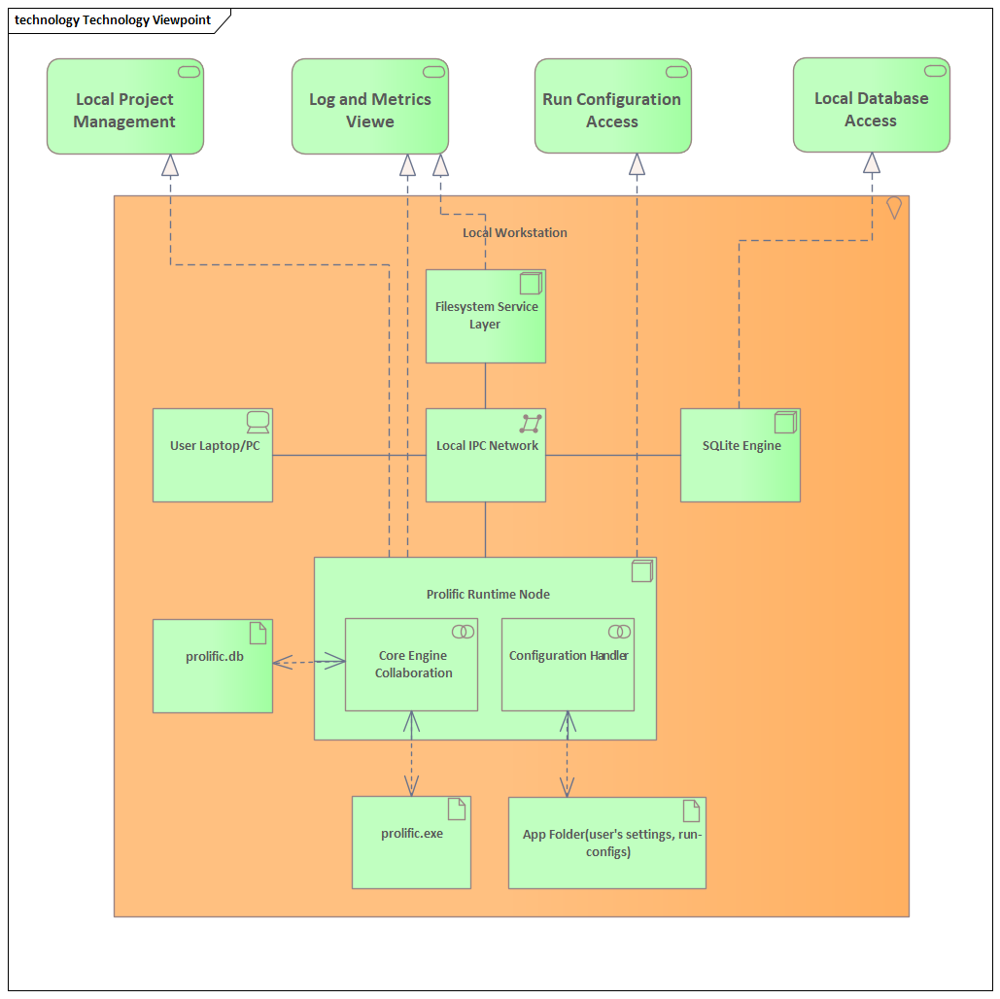

5W
1. Who?
- Primary Users: Developers (individuals and teams)
- Corporate Users: Companies needing project management for development teams
- Integration Partners: JetBrains (potential future integration)
- Investors/Owners: Project maintainers and contributors
2. What? (Project Purpose)
- Vision Prolific is an application that allows developers to discover, launch, and manage their projects from a single interface.
- It includes automated project scanning, log viewing, launch configurations, and plugin support.
- The project is monetized via corporate pricing plans, while remaining free for individual developers.
3. Where? (Usage Environment)
- Platforms: Primarily desktop applications (cross-platform support expected).
- Development Environments: JetBrains products (future integration planned), standalone use possible.
4. When?
- When a developer starts their workday and needs to quickly access their projects.
- When switching between multiple projects during development.
- When needing to restart, debug, or monitor logs efficiently.
5. Why? (Business & User Needs)
- Developers often struggle with managing multiple projects effectively.
- Existing solutions lack a unified interface for handling multiple projects.
- The tool simplifies project discovery, launching, and monitoring, boosting efficiency.
- Monetization supports ongoing development and corporate adoption.
6. How?
- Auto-detection: The app scans the system and lists all available projects.
- Quick Launch: Start your project with one click.
- Metrics Monitoring: View and analyze metrics in real-time.
- Log Monitoring: View and analyze logs in real-time.
- Customization: Configure startup scripts, environment variables
7. How Much? (Cost & Revenue)
- Pricing Strategy:
- Free for individual developers.
- Paid plans for companies based on team size and feature needs.
- Potential enterprise licensing deals.
RACI
| Phase | Task / Responsibility | Project Manager (Dzmitry Petukhou, Anton Horobets) |
Developers (Anton Horobets, Dzmitry Petukhou) |
UI/UX Designers(Dzmitry Petukhou, Anton Horobets, Popovych Andrii, Nematullah Hasani) | QA Engineers( Savelii Shaposhnyk) |
IT-architect (Nikita Kirilenko) |
|---|---|---|---|---|---|---|
| Proposal Phase | Research Competitors | A | C | C | I | C |
| Define Target Audience | A | C | C | I | C | |
| Investigation Phase | Technical Feasibility Study | A | R | C | I | C |
| User Interviews | A | R | C | I | C | |
| Charter Phase | Create Initial Product Backlog | A | R | C | I | C |
| Develop Project Charter | A | R | C | I | C | |
| Planning Phase | Design User Interface Mockups | A | C | R | I | C |
| Plan Development Sprints | A | R | C | I | C | |
| IT-architecture | A | C | C | I | R | |
| Implementation Phase | Develop Core Features | A | R | C | I | I |
| Conduct Integration Tests | A | R | C | R | I | |
| Project Close Phase | Collect User Feedback | A | C | C | I | R |
| Document Lessons Learned | A | R | C | I | I |
Class diagram

Run
You can install a configured installer for your platform from Releases or you can run using jar file.
If you want to run the app using a jar file, use this command
java -jar <path_to_jar_file>